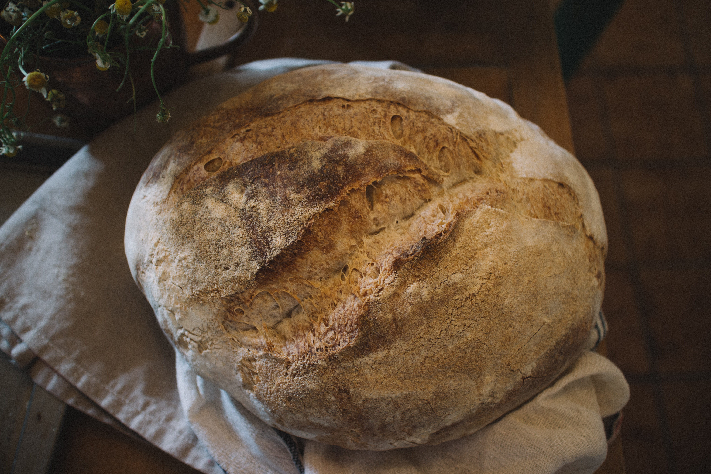
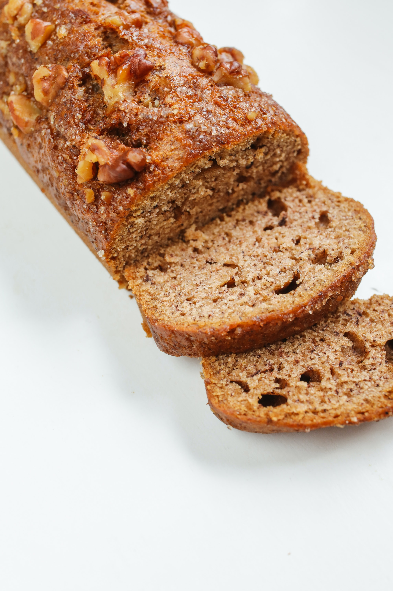
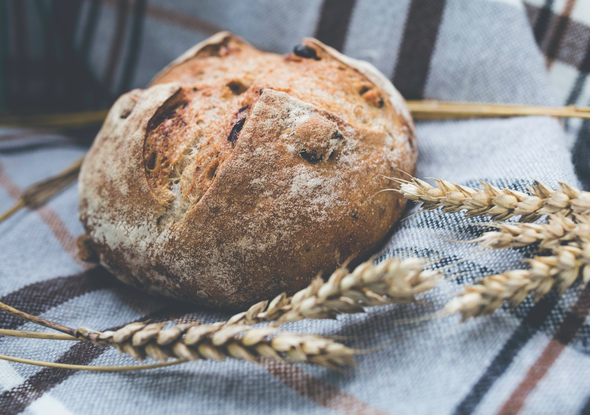
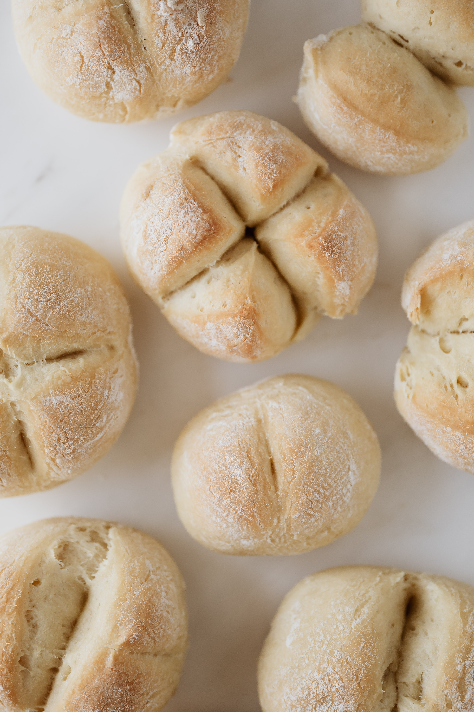

Landing Page
This is subtext to further describe the content of this page.

Types of Bread

Sourdough

Banana Bread

Wheat Bread

White Bread
Baking bread is a cheap and effective way to save money on your grocery bill. When a bag of flour can make around eight good-sized loaves of bread, the cost of buying the ingredients is far lower than what it would cost to buy as many loaves from the store.